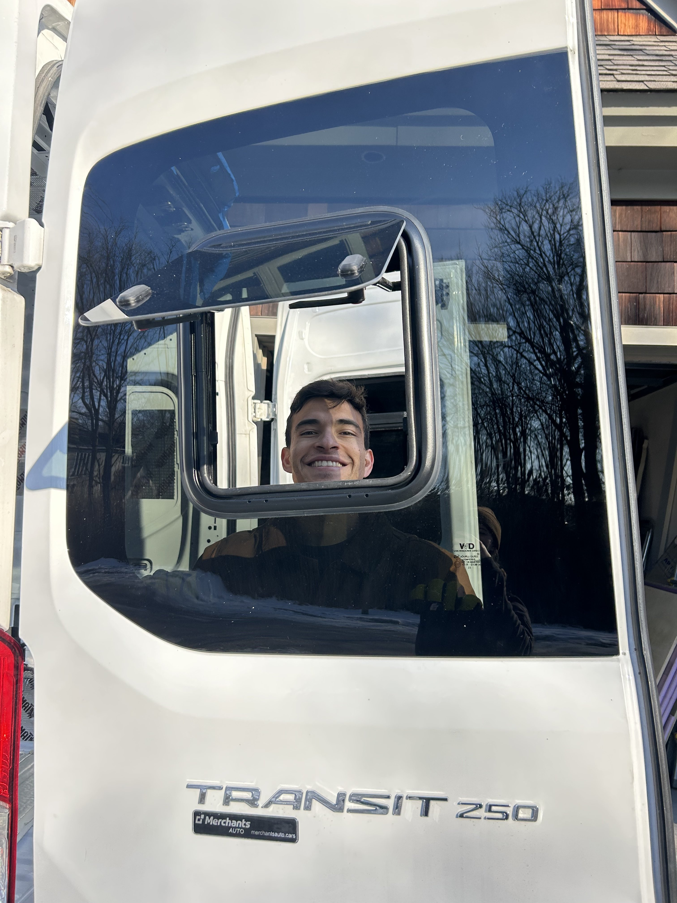
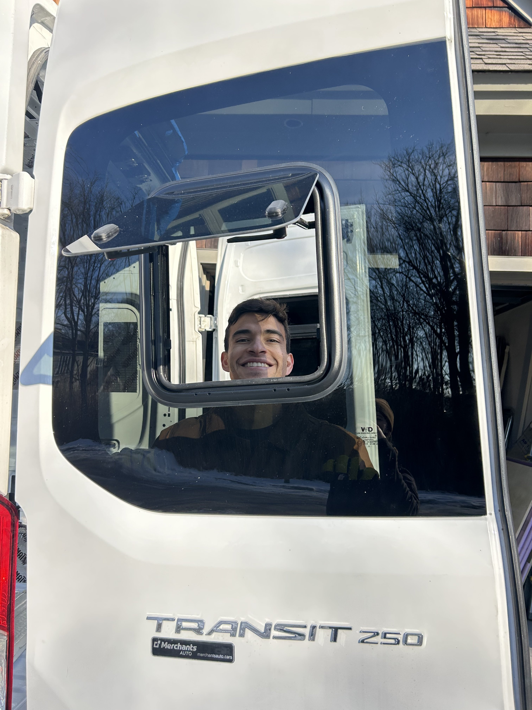

Body mod day(s)
rear windows
Time for our van’s first body mod, installing the rear windows! While all the videos we saw involved doing this straight on the van, we decided to make our lives a little harder at first but then a little easier and warmer later by taking the doors off. We disconnected the electrical wiring and traced our hinges so we’d have functional doors still once we were done, and, more importantly, hoped that our van didn’t feel too naked and afraid being doorless in the MA winter.
First off, we traced the outline for the factory cutout and drilled pilot holes through the metal. Then we flipped the window around, having the jigsaw lay flat while we cut a HUGE hole in our van! It came close, but we managed not to cut off the door lock while we were at it. For notoriety, we all signed the window in a place that will only be found when some future owner has to replace their rear windows.
We cleaned up the bare metal with a deburring tool, files, and rust prevention paint before adding on trimlock to hide the sharp edge. Next, our first guest tool appearance comes from my Grandma! She has these magical suction handles for adding grips inside showers that were a perfect multipurpose tool for picking up and positioning our windows. We applied primer and adhesive (as an aside, it’s kind of amazing this is the only thing holding your windows on) and very carefully placed our window on. We did have to make extra sure the windows would line up nicely when the doors went back on the van!
After everything set overnight, we got the doors back on and aligned to check out our work! The windows have inset awnings so we can get great airflow without getting wet if it rains and pull-down screens to keep the bugs out. We did end up with one minor leak that we caulked up, and now have a nice seal on the windows.
 


Since we managed to get through this installation without breaking anything, we treated ourselves to some margaritas!